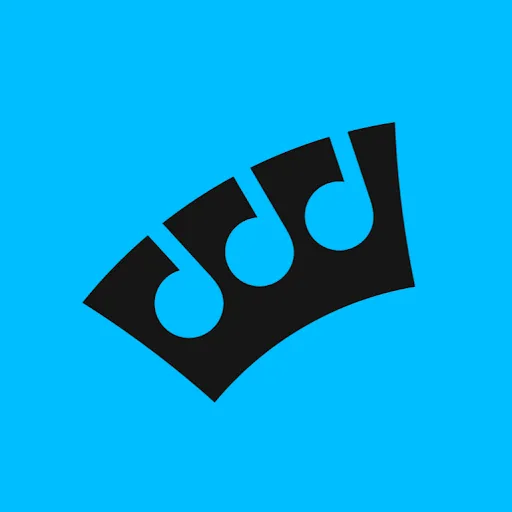

싱 킹 Sing King
싱 킹(Sing King)은 노래방(가라오케) 콘텐츠를 다루는 유튜브 채널이자 온라인 가라오케 플랫폼으로, 가라오케 부문에서 유튜브 최다 검색 브랜드로 소개된다. 누적 수십억 회 조회수와 월간 수천만 명 이용자 규모로 보도되며, 전 세계 이용자를 잇는 공통점은 '함께 노래하는 즐거움'으로 설명된다.
최종 업데이트

싱 킹은 어떤 브랜드인가
싱 킹(Sing King)은 노래방(가라오케) 콘텐츠를 다루는 유튜브 채널이자 온라인 가라오케 플랫폼으로, 가라오케 부문에서 유튜브 최다 검색 브랜드로 소개된다. 누적 수십억 회 조회수와 월간 수천만 명 이용자 규모로 보도되며, 전 세계 이용자를 잇는 공통점은 '함께 노래하는 즐거움'으로 설명된다.
싱 킹은 어떻게 봐야 할까
공개 메타데이터와 에셋 요약을 기준으로 아이덴티티 구조를 확인할 수 있습니다.
싱 킹은 어떻게 시작되고 성장했나
싱 킹은 유튜브에서 가장 많이 검색되는 가라오케 브랜드로 자리 잡은 노래방 채널이다. 트렌드 곡과 클래식 곡의 반주 버전에 가사를 싱크로 맞춰 누구나 따라 부를 수 있게 한 영상을 쌓아 올리며 세계 최대 규모의 가라오케 커뮤니티로 성장했다.
디자인 아카이브 맥락에서 이 항목이 기록되는 이유는 2022년 영국 스튜디오 노매드가 진행한 브랜드 아이덴티티 작업 때문이다. 노매드는 2016년 스튜어트 왓슨과 테리 스티븐스가 설립했고 BBC, 프리미어리그, 스카이 등을 고객으로 둔다.
의뢰의 핵심은 문화와 언어의 장벽을 넘어 누구나 알아보는 보편적 시각 아이덴티티를 만드는 것이었다. 노래로 묶이는 전 세계 이용자들의 공통 감정, 곧 기쁨과 해방감, 흥분과 어울림을 시각 언어로 옮기는 데 초점을 맞췄다.
싱 킹의 브랜드 아이덴티티는 무엇인가
런던 소재 디자인 스튜디오 Nomad가 맡은 작업으로, 문화적 장벽을 넘는 보편적 비주얼 아이덴티티를 목표로 가라오케의 기쁨·해방감·흥분·연대감을 시각화했다. 워드마크와 보조 서체로 Sharp Grotesk를 사용하고, 'RGBOMG'로 표현된 강렬하고 폭넓은 컬러 팔레트, 펠트펜 같은 굵은 외곽선, 스티커 소재감을 살린 적층·레이어링 요소, 일관된 모션 거동으로 시스템을 구성했다.
디지털 중심 브랜드 특성에 맞춰 색·모션·형태를 강하게 끌어올린 점이 핵심이다.
싱 킹의 대표 제품과 서비스는 무엇인가
반주에 가사를 맞춘 가라오케 영상이 핵심 콘텐츠이며, 유튜브를 넘어 iOS와 안드로이드 모바일 앱, TV 앱, 독립형 웹 목적지로 확장하는 제품 포트폴리오를 지향했다. 노매드의 아이덴티티는 앱과 웹, 소셜 전반에 일관되게 적용되도록 모션 규칙까지 함께 설계됐다.
싱 킹은 누가 만들고 이끌었나
싱 킹은 지금 어떤 상태인가
세계에서 가장 많이 검색되는 가라오케 브랜드로 700만 구독자, 33억 누적 조회, 월 2천만 이상 이용자 규모를 기록했다. 최고경영자는 조던 그로스다.
노매드는 로고를 솔리드에서 일부를 덜어내 양·음 공간으로 서로 맞물린 두 형태를 만드는 컴파운딩 기법으로 구성했고, 샤프 그로테스크 서체, 채도를 끝까지 끌어올린 색, 펠트펜 같은 두꺼운 윤곽선, 스티커처럼 겹쳐 쌓는 레이어링을 결합했다.
싱 킹 연혁 — 주요 사건은 언제였나
싱 킹 로고는 어떻게 변해왔나
자주 묻는 질문
싱 킹는 어떤 산업의 브랜드인가요?
싱 킹는 미디어·엔터테인먼트 분야의 브랜드입니다.
싱 킹의 브랜드 아이덴티티는 무엇인가요?
런던 소재 디자인 스튜디오 Nomad가 맡은 작업으로, 문화적 장벽을 넘는 보편적 비주얼 아이덴티티를 목표로 가라오케의 기쁨·해방감·흥분·연대감을 시각화했다.
싱 킹의 대표 제품은 무엇인가요?
반주에 가사를 맞춘 가라오케 영상이 핵심 콘텐츠이며, 유튜브를 넘어 iOS와 안드로이드 모바일 앱, TV 앱, 독립형 웹 목적지로 확장하는 제품 포트폴리오를 지향했다.
싱 킹는 현재 어떤 상태인가요?
세계에서 가장 많이 검색되는 가라오케 브랜드로 700만 구독자, 33억 누적 조회, 월 2천만 이상 이용자 규모를 기록했다.
싱 킹의 브랜드 아이덴티티는 누가 디자인했나요?
싱 킹의 아이덴티티 디자인은 Nomad가 맡은 것으로 기록되어 있습니다.
출처와 검증
브랜드명은 한글과 원어를 함께 표기하되 데이터에 없는 표기는 만들지 않습니다. 기원 국가·설립연도는 검수된 정의문에서 확인된 값을 우선하고, 없을 때만 공식 웹사이트 URL이 일치하는 위키데이터 개체의 값을 씁니다.